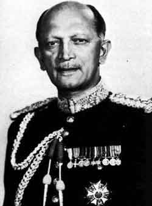
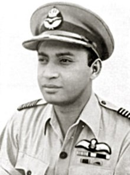
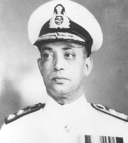

"We know that in conflict, there is only outcome that is a victory.Jung ka ek hi usul hai, vo hai jeet.
May I assure you that we shall accomplish the same at all costs."
:General Bipin Rawat
"मैं तिरंगा फहराकर वापस आऊंगा या फिर तिरंगे में लिपटकर आऊंगा, लेकिन मैं वापस अवश्य आऊंगा।"
:कैप्टन विक्रम बत्रा
“To me there is only two stans -Hindustan and Foujistan.”
:K.M Kariappa
"Even a small thing teaches us a lot,that's why we should never consider anyone small"
:Subroto Mukerjee
सरहद पर मुझको जाना है ।
है तमन्ना यही दिल की,
दुश्मन को उनका औकात दिखाना है
राष्ट्र के खातिर मर मिटने को
सरहद पर मुझको जाना है ।
फौलादी हैं बाहें अपनी,
हिम्मत को बुलंद बनाना है।
राष्ट्र सेवा में समर्पण हेतु,
सरहद पर मुझको जाना है ।
जो सुना नही वीरों की गाथा,
सिर्फ बाते बनाने का अधिकार नही।
वह खून नहीं वह पानी है,
जिसमे स्वदेश का उबाल नहीं।
चलो एक जुट हम हो जाते है,
राष्ट्र का मान बढ़ाना है।
चाहे तिरंगा में लिपटकर आऊ,
सरहद पर मुझको जाना है ।
: ऋतिक रौशन

First chief of Army: Kodandera Madappa Cariappa
Born :28 January 1899
Rank : Field Marshal
Service Duration:1919-1986
Unit :Rajput Regiment
Battles/wars :World War II
Indo-Pakistani War of 1947
Died :15 February 1993 (aged 94)
He also served the nation between 1986-1993, Indian military officers of five-star rank hold their
rank for life, and are considered to be serving officers
until their deaths.

First chief of Air Staff: Subroto Mukerjee
Born :5 March 1911
Rank :Air Marshal
Service Duration:1932-1960
Unit :No. 1 Squadron IAF
Battles/wars :Annexation of Hyderabad
Indo-Pakistani War of 1947-1948
World War II
Waziristan campaign (1936-1939)
Died :8 November 1960 (aged 49)
The first batch of Indian pilots at RAF Cranwell in 1931. With Bhupendra Singh, Amarjeet Singh and
Subroto Mukerjee.

First chief of Naval Staff: Ram Dass Katari
Born :8 October 1911
Rank :Admiral
Service Duration:1927-1962
Sloops :HMIS Kistna (U46),
HMIS Cauvery (U10)
and HMIS Jumna (U21)
Battles/wars :World War II
Liberation of Goa
Died :21 January 1983 (aged 71)
As CNS, he designed the framework for India's strategy for managing maritime security issues.